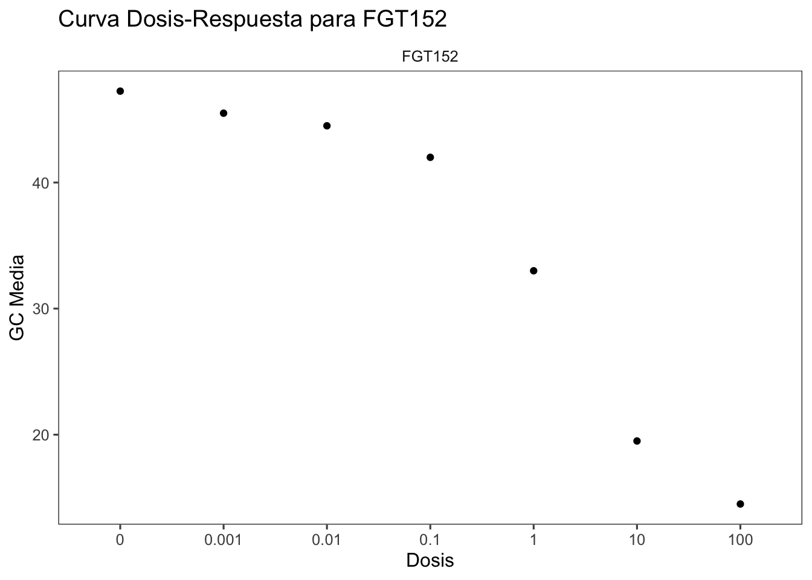
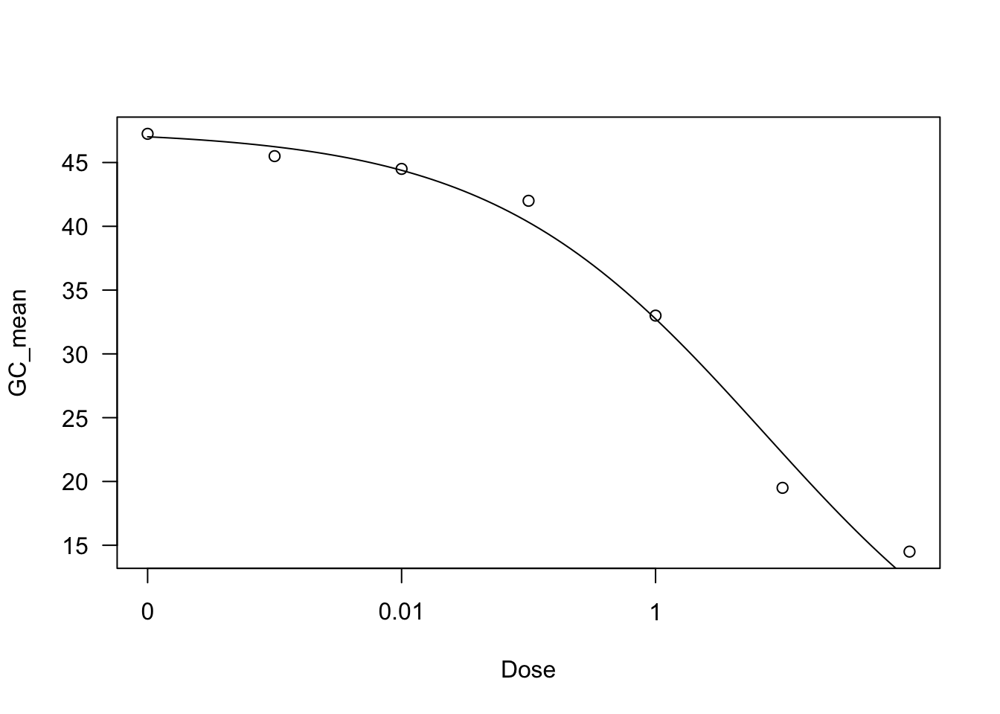
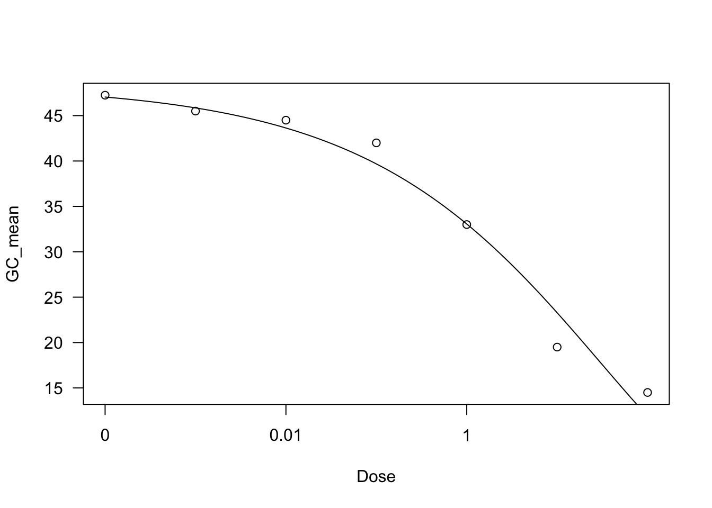
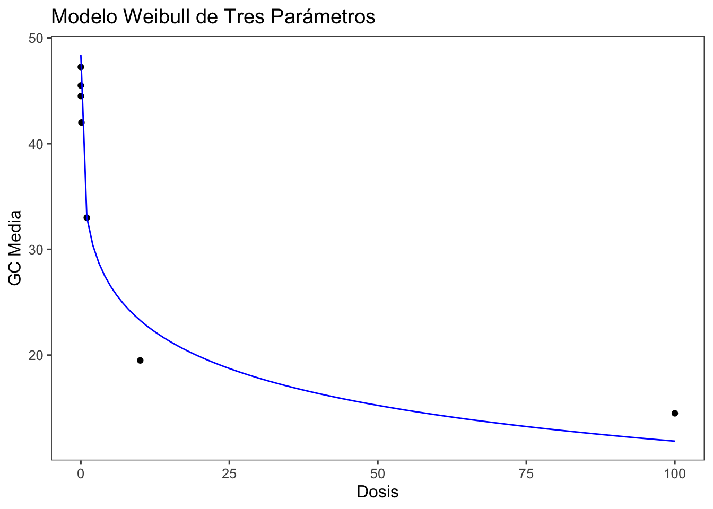
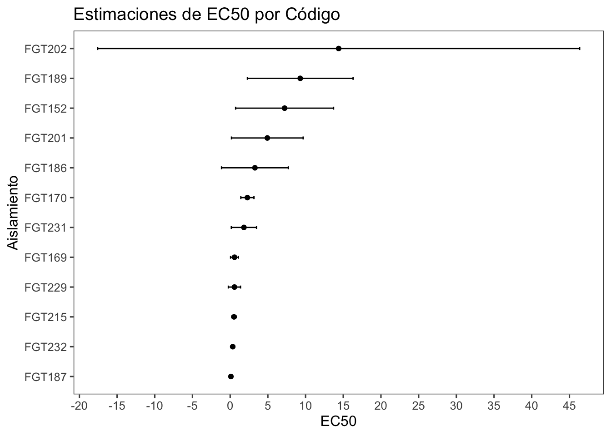

Codigo
# Cargar paquetes necesarios
library(tidyverse)
library(ggplot2)
library(gsheet)
library(dplyr)
library(drc)
library(ec50estimator)
library(ggthemes)
library(DT)El análisis de regresión no lineal es esencial cuando los datos no siguen un patrón lineal y es necesario utilizar técnicas que capturen la relación entre las variables de manera más precisa. Este tipo de análisis es crucial en estudios donde las relaciones entre variables no pueden ser adecuadamente modeladas mediante funciones lineales.
A continuación, se presenta una guía práctica para realizar un análisis de regresión no lineal en RStudio utilizando diversos paquetes y funciones.
En muchos estudios, las relaciones entre las variables pueden ser complejas y no seguir un patrón lineal simple. La regresión no lineal permite capturar estas relaciones complejas y proporciona una mejor comprensión de los datos. Es especialmente útil en casos donde la respuesta varía de manera no constante con la dosis o tratamiento, como en estudios de toxicidad, farmacología, biología, y muchas otras áreas científicas y de ingeniería.
Primero, instalamos y cargamos los paquetes necesarios para el análisis.
Importamos los datos desde una hoja de cálculo de Google Sheets que contiene datos sobre la sensibilidad a fungicidas.
Preparamos los datos para el análisis, agrupándolos y calculando la media de GC.
Creamos un gráfico para visualizar los datos de uno de los códigos específicos (por ejemplo, “FGT152”) utilizando ggplot2.

Utilizamos el paquete drc para ajustar un modelo de regresión no lineal y calcular el EC50.
Este modelo se ajusta utilizando los siguientes comandos:
[1] 33.60846
Model fitted: Log-logistic (ED50 as parameter) with lower limit at 0 (3 parms)
Parameter estimates:
Estimate Std. Error t-value p-value
b:(Intercept) 0.401905 0.053427 7.5225 0.001672 **
d:(Intercept) 47.540342 1.459890 32.5643 5.302e-06 ***
e:(Intercept) 7.220130 2.340120 3.0854 0.036739 *
---
Signif. codes: 0 '***' 0.001 '**' 0.01 '*' 0.05 '.' 0.1 ' ' 1
Residual standard error:
1.993805 (4 degrees of freedom)
Estimated effective doses
Estimate Std. Error
e:1:50 7.2201 2.3401Este modelo puede proporcionar un mejor ajuste basado en el AIC:
[1] 37.75192
Model fitted: Weibull (type 1) with lower limit at 0 (3 parms)
Parameter estimates:
Estimate Std. Error t-value p-value
b:(Intercept) 0.28354 0.04760 5.9567 0.003987 **
d:(Intercept) 48.38112 2.09996 23.0390 0.00002103 ***
e:(Intercept) 30.12379 12.58003 2.3946 0.074796 .
---
Signif. codes: 0 '***' 0.001 '**' 0.01 '*' 0.05 '.' 0.1 ' ' 1
Residual standard error:
2.680509 (4 degrees of freedom)
Estimated effective doses
Estimate Std. Error
e:1:50 8.2704 3.6719Visualizamos los resultados del modelo ajustado utilizando ggplot2.
# Obtener predicciones del modelo
predictions <- data.frame(Dose = seq(min(FGT152$Dose), max(FGT152$Dose), length.out = 100))
predictions$GC_mean <- predict(drc1, newdata = predictions)
# Crear gráfico con predicciones
FGT152 |>
ggplot(aes(Dose, GC_mean)) +
geom_point() +
geom_line(data = predictions, aes(Dose, GC_mean), color = "blue") +
labs(title = "Modelo Weibull de Tres Parámetros", x = "Dosis", y = "GC Media") +
theme_few()
ec50estimatorEstimamos los valores de EC50 para diferentes identificadores (ID).
# Estimar EC50
df_ec50 <- estimate_EC50(GC_mean ~ Dose, data = dat2, isolate_col = "Code", interval = "delta", fct = drc::LL.3())
df_ec50 |>
DT::datatable(
extensions = 'Buttons',
options = list(dom = 'Bfrtip',
buttons = c('excel', "csv")))|>
formatRound(c('Estimate','Std..Error','Lower','Upper'), 2)df_ec50El dataframe df_ec50 generalmente incluye las siguientes columnas:
# Crear gráfico de estimaciones de EC50
df_ec50 |>
ggplot(aes(Estimate, reorder(ID, Estimate))) +
geom_point() +
geom_errorbar(aes(xmin = Lower, xmax = Upper), width = 0.1) +
scale_x_continuous(breaks = seq(from = -30, to = 50, by = 5))+
labs(title = "Estimaciones de EC50 por Código", x = "EC50", y = "Aislamiento") +
theme_few()
En el gráfico resultante:
El análisis de regresión no lineal es una herramienta poderosa para modelar relaciones complejas entre variables. Con RStudio y los paquetes adecuados, podemos realizar análisis detallados y obtener estimaciones precisas que informen mejor nuestras decisiones basadas en datos. La utilización de ggplot2 para la visualización de los resultados permite una interpretación más clara y efectiva de los modelos ajustados.
# Análisis de Regressión No Lineal
## Introducción
El análisis de regresión no lineal es esencial cuando los datos no siguen un patrón lineal y es necesario utilizar técnicas que capturen la relación entre las variables de manera más precisa. Este tipo de análisis es crucial en estudios donde las relaciones entre variables no pueden ser adecuadamente modeladas mediante funciones lineales.
A continuación, se presenta una guía práctica para realizar un análisis de regresión no lineal en RStudio utilizando diversos paquetes y funciones.
## ¿Por qué Realizar un Análisis de Regressión No Lineal?
En muchos estudios, las relaciones entre las variables pueden ser complejas y no seguir un patrón lineal simple. La regresión no lineal permite capturar estas relaciones complejas y proporciona una mejor comprensión de los datos. Es especialmente útil en casos donde la respuesta varía de manera no constante con la dosis o tratamiento, como en estudios de toxicidad, farmacología, biología, y muchas otras áreas científicas y de ingeniería.
## Paso 1: Instalación y Carga de Paquetes
Primero, instalamos y cargamos los paquetes necesarios para el análisis.
```{r}
# Cargar paquetes necesarios
library(tidyverse)
library(ggplot2)
library(gsheet)
library(dplyr)
library(drc)
library(ec50estimator)
library(ggthemes)
library(DT)
```
## Paso 2: Importación de Datos
Importamos los datos desde una hoja de cálculo de Google Sheets que contiene datos sobre la sensibilidad a fungicidas.
```{r}
# Importar datos desde Google Sheets
dat <- gsheet2tbl("https://docs.google.com/spreadsheets/d/15pCj0zljvd-TGECe67OMt6sa21xO8BqUgv4d-kU8qi8/edit#gid=0")
dat |>
DT::datatable(
extensions = 'Buttons',
options = list(dom = 'Bfrtip',
buttons = c('excel', "csv")))
```
## Paso 3: Preparación de Datos
Preparamos los datos para el análisis, agrupándolos y calculando la media de `GC`.
```{r}
# Evitar notación científica
options(scipen=999)
# Procesar datos
dat2 <- dat |>
dplyr::select(-Isolate, -Population) |>
group_by(Code, Year, Dose) |>
summarise(GC_mean = mean(GC))
dat2 |>
DT::datatable(
extensions = 'Buttons',
options = list(dom = 'Bfrtip',
buttons = c('excel', "csv")))
```
## Paso 4: Visualización de Datos
Creamos un gráfico para visualizar los datos de uno de los códigos específicos (por ejemplo, "FGT152") utilizando `ggplot2`.
```{r}
# Filtrar datos para un código específico
FGT152 <- dat2 |> filter(Code == "FGT152")
# Crear gráfico
FGT152 |>
ggplot(aes(factor(Dose), GC_mean)) +
geom_point() +
geom_line() +
facet_wrap(~ Code) +
theme_few()+
labs(title = "Curva Dosis-Respuesta para FGT152", x = "Dosis", y = "GC Media")
```
## Paso 5: Ajuste del Modelo de Regressión No Lineal
Utilizamos el paquete `drc` para ajustar un modelo de regresión no lineal y calcular el EC50.
### Modelo Log-Logístico de Tres Parámetros (LL.3)
Este modelo se ajusta utilizando los siguientes comandos:
```{r}
# Ajustar modelo log-logístico de tres parámetros
drc1 <- drm(GC_mean ~ Dose, data = FGT152, fct = LL.3())
AIC(drc1)
summary(drc1)
plot(drc1)
ED(drc1, 50)
```
### Modelo Weibull de Tres Parámetros (W1.3)
Este modelo puede proporcionar un mejor ajuste basado en el AIC:
```{r}
# Ajustar modelo Weibull de tres parámetros
drc1 <- drm(GC_mean ~ Dose, data = FGT152, fct = W1.3())
AIC(drc1)
summary(drc1)
plot(drc1)
ED(drc1, 50)
```
## Paso 6: Visualización del Modelo Ajustado
Visualizamos los resultados del modelo ajustado utilizando `ggplot2`.
```{r}
# Obtener predicciones del modelo
predictions <- data.frame(Dose = seq(min(FGT152$Dose), max(FGT152$Dose), length.out = 100))
predictions$GC_mean <- predict(drc1, newdata = predictions)
# Crear gráfico con predicciones
FGT152 |>
ggplot(aes(Dose, GC_mean)) +
geom_point() +
geom_line(data = predictions, aes(Dose, GC_mean), color = "blue") +
labs(title = "Modelo Weibull de Tres Parámetros", x = "Dosis", y = "GC Media") +
theme_few()
```
## Paso 7: Estimación de EC50 con el Paquete `ec50estimator`
Estimamos los valores de EC50 para diferentes identificadores (ID).
```{r}
# Estimar EC50
df_ec50 <- estimate_EC50(GC_mean ~ Dose, data = dat2, isolate_col = "Code", interval = "delta", fct = drc::LL.3())
df_ec50 |>
DT::datatable(
extensions = 'Buttons',
options = list(dom = 'Bfrtip',
buttons = c('excel', "csv")))|>
formatRound(c('Estimate','Std..Error','Lower','Upper'), 2)
```
### Contenido de `df_ec50`
El dataframe `df_ec50` generalmente incluye las siguientes columnas:
1. **ID**: El identificador o código del grupo o muestra para el cual se ha calculado la EC50.
2. **Estimate**: La estimación de la EC50.
3. **Lower**: El límite inferior del intervalo de confianza para la EC50.
4. **Upper**: El límite superior del intervalo de confianza para la EC50.
```{r}
# Crear gráfico de estimaciones de EC50
df_ec50 |>
ggplot(aes(Estimate, reorder(ID, Estimate))) +
geom_point() +
geom_errorbar(aes(xmin = Lower, xmax = Upper), width = 0.1) +
scale_x_continuous(breaks = seq(from = -30, to = 50, by = 5))+
labs(title = "Estimaciones de EC50 por Código", x = "EC50", y = "Aislamiento") +
theme_few()
```
## Interpretación de Resultados
1. **Modelo Log-Logístico de Tres Parámetros (LL.3)**: Este modelo es útil para describir relaciones en forma de S entre dosis y respuesta.
2. **Modelo Weibull de Tres Parámetros (W1.3)**: Proporciona mayor flexibilidad y puede ajustarse mejor a datos asimétricos.
3. **EC50**: La dosis efectiva al 50% es una medida importante en estudios de toxicidad y sensibilidad. Comparar EC50 entre diferentes grupos puede revelar diferencias significativas en la respuesta.
### Interpretación del Gráfico
En el gráfico resultante:
- Cada punto representa la estimación de EC50 para un código específico.
- Las barras de error muestran los intervalos de confianza del 95% para cada estimación.
- La posición horizontal de los puntos permite comparar visualmente las estimaciones de EC50 entre diferentes Aislamientos.
- Un intervalo de confianza más estrecho indica una estimación más precisa, mientras que un intervalo más amplio sugiere mayor incertidumbre.
## Aprendizaje del día
El análisis de regresión no lineal es una herramienta poderosa para modelar relaciones complejas entre variables. Con RStudio y los paquetes adecuados, podemos realizar análisis detallados y obtener estimaciones precisas que informen mejor nuestras decisiones basadas en datos. La utilización de `ggplot2` para la visualización de los resultados permite una interpretación más clara y efectiva de los modelos ajustados.